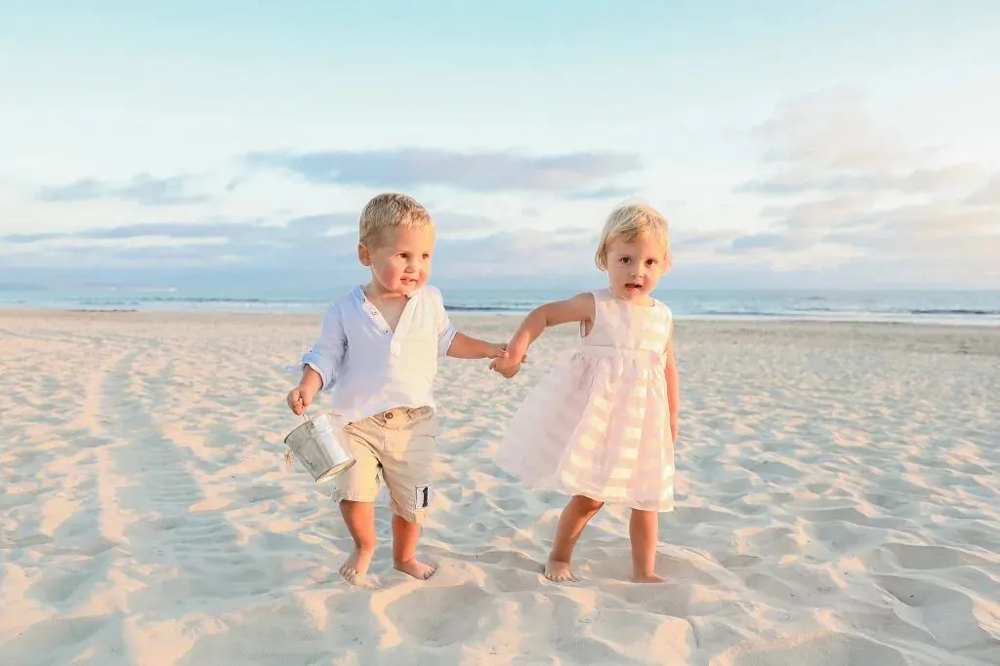
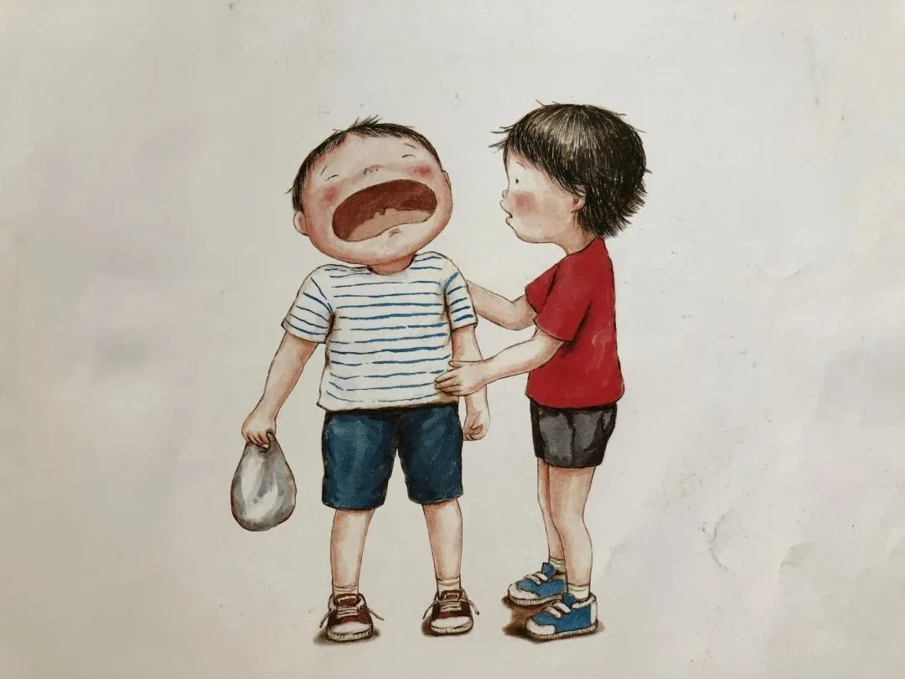
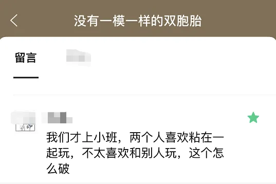
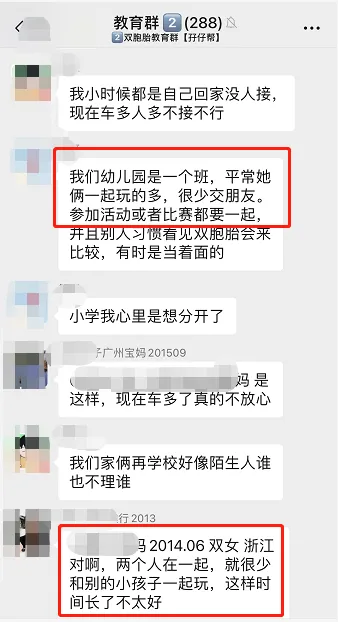
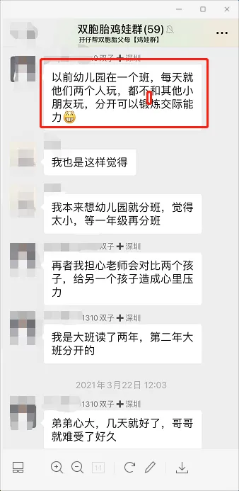

孖仔帮
公众号ID：twinsbang
关注
文|圆圈妈
网图|侵删
先插播一则群通知：第9期双胞胎跳蚤市场群已开放，公众号输入“赶集9”，扫码即可入群。待产囤货的孕妈孕爸或有需要处理母婴闲置物品的宝妈奶爸快来撩吧！
圆圈读幼儿园小班时，班上有一对龙凤胎，哥哥和妹妹，兄妹俩总是黏在一起玩，不是很喜欢跟别的小朋友玩，也不允许对方跟其他小朋友接触。
只要哥哥跟其他小伙伴玩，平时乖巧温顺的妹妹就会发脾气哭，生怕哥哥被人抢走了似的；而宠妹心切的哥哥，要是看到有小朋友靠近妹妹，也会不高兴地把对方推开。
两人似乎心意相通，有自己的一个小世界，里面只有他们两人，不允许有其他人。
兄妹俩从6个月开始就有互动，会微笑、打手势、递玩具、说一些谁也听不懂的话，交流很默契，从不打架抢玩具。
因为他们之间太熟悉彼此了，只需一个眼神，一个手势就能让对方理解毫不费力，其他小朋友却只能挠挠后脑勺表示莫名其妙。
也许是因为交流非常通畅让兄妹俩觉得跟别的小孩不好交流的缘故，不管在家里还是出去玩，他们都很自然地找对方玩，兄妹俩玩的东西，别的小孩也很难加入进来，一直到入园后，依然如此。
兄妹俩的妈妈是家委会成员，经常在班级微信群吐槽：我太难了，他们兄妹俩就好像前生今世的恋人，感情好到让我都很羡慕妒忌恨。
这让那些经常爆发手足纷争的二胎家庭情何以堪呐，大家都默默觉得这是妥妥的凡尔赛，只有我对这位龙凤胎妈妈表示深切的同情：阿弥陀佛，要是圆圈兄弟也像这对龙凤胎这样如漆似胶难分难舍，我也会崩溃的。
相比耳磨厮鬓，我更倾向于看到双胞胎更真实的另一面：上一秒苦大深仇厮打在一起，下一秒情深似海熊抱成一团。
在人际社交方面，圆圈从小到大的表现尚且正常，比如手足间常见的互咬，互厮，互踢，互打，互抢....每天都在上演。
入园后，他们经常不在一起玩，即便是老师刻意把他们安排在同一桌，他们好像有仇似的，不自觉地分散开来，更有意思的是，他们不相亲相爱就算了，还会为了争抢某个玩具或者与某个可爱的小萝莉在同一组打得不可开交。
好在他们不会总是互相排斥，有时也会互相关心，彼此在意，若是把他们分开在不同的游戏区域，他们就会心不在焉，左顾右盼地寻找对方的身影。比如，老师说：有一次圆圆去上厕所太久了，圈圈就会跑去厕所瞅一瞅，当看到圆圆原来是在玩水，马上就跟老师打小报告。
入托或入园后的双胞胎在最初的人际交往上，一般会出现两种情况：
两人只跟彼此玩，拒绝与其他小朋友接触。
彼此不找对方玩，但若没见着了，又觉得离不开对方。
第二种情况应该占绝大多数，圆圈就属于第二种，相对而言，比较让人省心，有时还很暖心。
但第一种情况也不少哦，比如上述那一对只专注在两人世界的龙凤胎兄妹，还有上一期推文《没有一模一样的双胞胎》，有妈妈留言说【我们才上小班，两个人喜欢黏在一起玩，不太喜欢和别人玩】也属于第一种情况；
还有我们双胞胎教育群和鸡娃群也有一波吐槽：
PROFILE
今日这篇来探讨下，如果双胞胎太粘着彼此，不愿意接触其他小朋友，这种情况如何破呢？
分析
双胞胎孩子在许多惊人的相似之处，容易忽视自我的存在；他们相互依赖，容易局限在两个人的世界，从而渐渐地减少了社会性的交往。
入园前，双胞胎孩子们在一起生活，其实本身就是一个小集体，有其自然形成或是约定俗成的“潜规则”，当这个小集体遇到大集体时，他们手足间固有的平衡感就会被打破。
有些双胞胎平时习惯了只有两人的玩乐空间，若突然出现很多小伙伴，会很不适应，会有种领土被侵犯的感觉，于是就对其他小朋友有抵触心理！
支招
1，创造机会接触其他小朋友
增加外出次数，多带孩子们参加户外活动，去接触外面的世界，比如去公园，游乐场等小朋友聚集的地方，当遇到年龄差不多的小朋友，要鼓励双胞胎过去与小朋友打招呼；还可以邀请亲戚朋友家的孩子来自己家里做客。
总之，尽可能多创造机会，让双胞胎与同龄伙伴一起游戏和活动，减少孩子们对陌生事物的恐惧感，锻炼孩子们与陌生人交流的能力。
2，尽量多与其中一个孩子单独相处
带双胞胎参加户外活动时，如果可以，尽量只跟双胎之一单独相处，可以爸爸带一个去公园，妈妈带另一个去游乐场，让两孩子各自接触到不同的人，不同的圈子，去经历不同的事情，让双胞胎渐渐习惯没有另一个TA在身边时的感觉，慢慢适应和发现与其他小伙伴们在一起玩耍的别样乐趣。
这样可以帮助双胞胎孩子们尽早发现自我的存在，还有自己的独一无二，从而渐渐从狭窄的二人小世界中脱离出来。
3，尊重双胞胎的差异性
双胞胎有不同的个性和兴趣特长，要把他们当作两个不同的独立个体，鼓励他们发展各自的个性特征，根据孩子们各自的性格、爱好给予自由选择、自由发挥的空间。
比如，让孩子们根据自己的喜好自己挑衣服、玩具、书包，参加各自喜欢的兴趣班等，通过给自主权，提高孩子们的自我意识，让他们觉得自己在慢慢长大。,
4，必要时，分班处理
上述那对龙凤胎兄妹，上中班后就分开在不同班级，所有问题都迎刃而解了。双胞胎不在同一个班级，会有更多机会培养两人各自的朋友圈子，有更多的社会交往。
可能刚开始，两孩子会很不适应，会彼此思念，但随着时间的推移，加之家长和老师的适时引导和关怀，这种情况一般不会持续太长时间；他们会重新找到属于两人的相处模式和平衡点，快速和谐地融入到大集体。
最后，再划下重点，双胞胎社交能力的培养，要从娃娃开始抓起，可别指望给双胞胎彼此找个伴就可以高枕无忧一起玩到上幼儿园哦。
双胞胎自带天生的玩伴，不代表不需要其他玩伴，他们其实比普通的兄弟姐妹更需要除手足以外的其他玩伴。
他们需要被各自的同伴所接纳，找到一种归属感和成就感，这是手足间的陪伴替代不了的！
所以，从今天开始，双胞胎爸爸妈妈们又多了一个艰巨的任务：敞开大门，带上双胞胎，去给他们找小伙伴玩吧！
-END-
今日互动话题
#你家双胞胎会很依赖彼此吗？#
评论区聊一聊呗！
微信公众号：孖仔帮
ID : twinsbang
专注双胞胎孕育，养育，教育经验分享
扫码关注我们
点一下你会更好看耶




